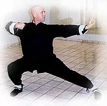

Aquecimento para o Treino
Por Thomas Pinheiro
Essencial para o aprendizado e desenvolvimento das técnicas do estilo Wing Chun, o aquecimento é uma necessidade em qualquer atividade física, pois tem a finalidade de prevenir possíveis lesões. Tradicionalmente, não se fazia aquecimento no aprendizado de Wing Chun. O mestre se restringia apenas ao ensino técnico, prevendo que seu aluno realizaria por conta própria um aquecimento antes do treino, muitas vezes utilizando-se da própria técnica para tal.
O aquecimento para Wing Chun parte da vontade, do conhecimento e da intenção para com os alunos por parte de mestres e professores. Um aquecimento direcionado à prática de Wing Chun busca proporcionar ao aluno relaxamento dos músculos, alongando, soltando as juntas, e fornecendo um melhor trabalho de oxigenação, trabalho postural e concentração, de forma a promover condicionamento ao corpo como um todo, facilitando assim as técnicas de Wing Chun propriamente ditas. Exercícios internos de chi kung ajudam, e muito, como aquecimento para o Wing Chun, auxiliando o fortalecimento de músculos, articulações e tendões, dando-lhes também velocidade.
Há inúmeros exercícios chineses nesse sentido, como por exemplo o Ba Ton Chin, e outros que antecedem a própria criação da arte marcial do kung fu. O estilo wing chun é conhecido dentre os estilos de kung fu, como um estilo híbrido, pois se utiliza de 50% de trabalho interno e de 50% de externo, embora de forma comum, movimentos retilíneos, o que dificulta o aspecto do relaxamento, essencial para se alcançar um nível mais alto na prática do estilo.
O estilo wing chun quando de sua criação por Ng Mui, foi elaborado a partir das características de uma mulher: leveza, soltura, rapidez, sensibilidade. Hoje, a prática do estilo é realizada basicamente por homens, o que faz com que, em sua difusão, perca muitas vezes suas características originais. Essa perda deve-se, em parte, ao fato de muitos professores se basearem num treino de força física, sobrepujando a técnica, possivelmente por se tratar de um método de obtenção de resultados a curto prazo, o que impede, todavia, o avanço a um nível mais elevado dentro do estilo.
O praticante de wing chun deve realizar um aquecimento correto, que leve em conta seu biotipo natural. Um indivíduo forte deve, naturalmente, aproveitar e tirar vantagem de sua condição, enquanto um mais fraco com certeza irá trabalhar para uma compensação, sempre dentro dos limites de seu organismo. No wing chun, o peso do corpo é somado a força de explosão, gerando maior potência; o aumento de massa além do biotipo natural, acarreta perda de velocidade, aumentando a tensão do corpo.
No caso de indivíduos muito fortes, ou pesados, há certa dificuldade no aprendizado, pois há necessidade de soltar o corpo. Indivíduos magros, e leves, por sua vez, também podem apresentar o mesmo tipo de dificuldade, graças à tensão extrema do corpo, de caráter nem sempre físico, mas de ordem psicológica, ou seja, uma carga emocional não trabalhada. O aquecimento, portanto, não deve ser um tempo perdido, mas uma fonte de lucros para o treino técnico.